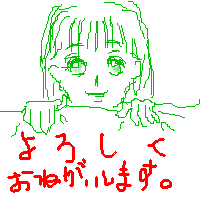
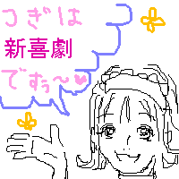
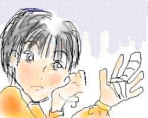
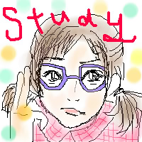

うちのお絵描きBBSでは、毎週お題を出させて頂いてるのですが、
その時に描くのがちょっとした「お題絵」なんです。
これは毎回小さく短時間で描くので、すごく雑です。なので今までUPしてませんでしたが、
なんだか可愛そうな気もするので(笑)今回UPすることにしました。
本当にかなり雑なので覚悟して見てください(笑)。




|
October.2002
左上の里穂が記念すべきうちの初お絵描きです。これからよろしく、というやつですね。
最初だけあって、私もまだPCで絵を描く事に慣れてません。
かなり似てないし、この字…ヒドすぎる。。
右は見てお分かりの通り、「新喜劇」の回のものです。口がヒドい…。
先日眠り姫の里穂をUPした時、よく描いてるはずの里穂の画像があまりに少なくて驚いたんですが、
こういうとこでちょこちょこと描いてたんですね。
こう見ると、私はどうやら里穂さんが一番早く描けるみたいです。
ここにはありませんが、あと何回かは描いてます。
とにかく可愛く描けばなんとか似せられるからでしょうか。すごいぞ里穂さん！(笑)
下段左の山ちゃんは、「てれび戦士の休日」という事で、夏休み明けケガをしてたましたよね？
それであまり楽しめなかったのでは？とちょっと心配して描きました。
右は分からないかもしれませんが、お志穂さんです…。
前回のティンカーベルがあまりにも似てなかったのでリベンジでしたが、
またしても失敗に終わりました…。難しい〜！お題は「LET'S STUDY!」です。